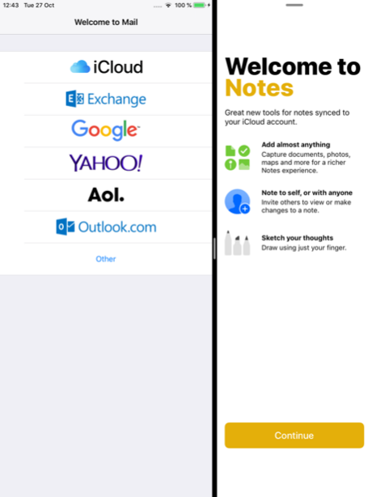
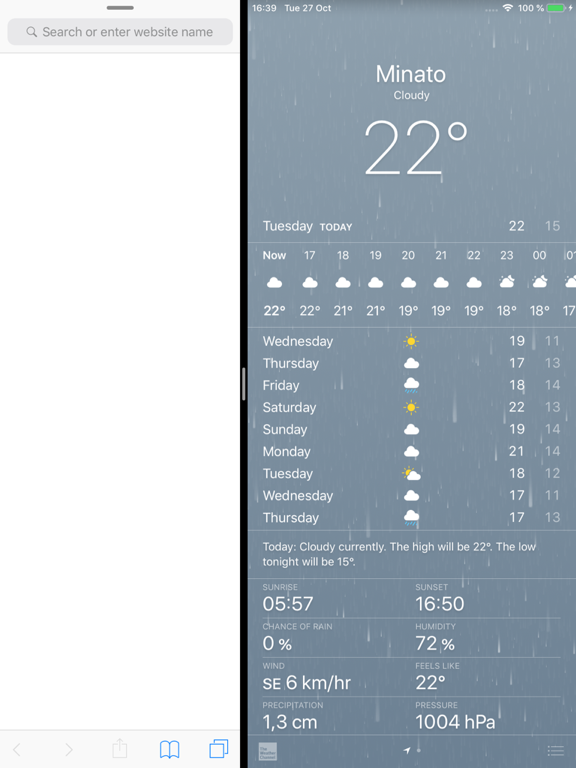
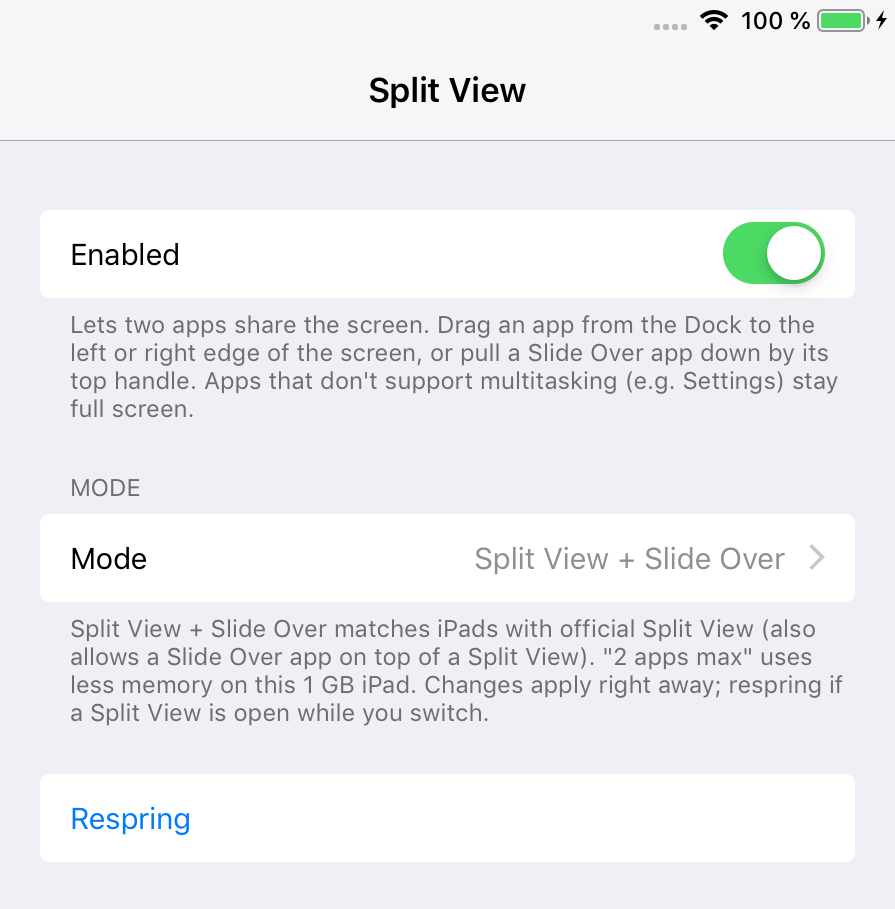

SplitViewEnabler (iOS 12)
Split View and Slide Over on iPads that only had Slide Over.
Apple left Split View out on some iPads that run iOS 12, such as the iPad mini 2, iPad mini 3 and the first iPad Air. They only get Slide Over.
SplitViewEnabler turns on real Split View, so two apps can share the screen side by side. It can also put a Slide Over app on top of a Split View, like on newer iPads.
To use it, drag an app from the Dock to the left or right edge of the screen, or pull a Slide Over app down by its top handle. Apps that don't support multitasking (such as Settings) stay full screen.
Screenshots



Features
- Split View: two apps side by side, in portrait and landscape
- Slide Over on top of a Split View (three apps at once)
- A lighter "2 apps max" mode for 1 GB iPads
- Settings switch to turn it off, with no respring needed
Settings
Settings > Split View:
- Enabled: turns the tweak on or off. Applies right away.
- Mode: Split View + Slide Over (default, like iPads with official Split View), Split View, 2 apps max (uses less memory), or Slide Over only (stock).
- Respring: restarts SpringBoard. Only needed if a Split View is open while you change the mode.
Compatibility
- Tested on iPad mini 2, iOS 12.5.8 (checkra1n + odysseyra1n / libhooker)
- Expected to work on iOS 12.x
- Made for 64-bit iPads that have Slide Over but no Split View: iPad mini 2, iPad mini 3, iPad Air (1st generation)
- iPads that already have full Split View are not changed
Changelog
Version 2.0.1
- Renamed to include "(iOS 12)" in the name.
- Now installs only on iOS 12.x.
Version 2.0.0
- First public release.
- Settings page with Enabled switch, Mode picker and Respring button.
- Slide Over on top of Split View.
Information
| Version | 2.0.1 |
| Developer | itsAllexB |
| Size | 10 KB |
| License | GPL-3.0 |
| Source code | GitHub |
| Problems | Report an issue |
Unofficial. Not affiliated with or endorsed by Apple.